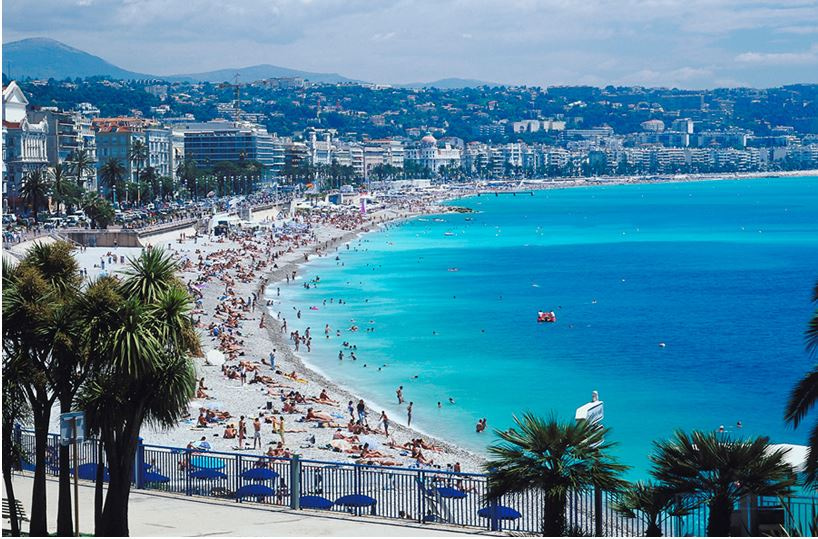

Ніцца

Ніцца — місто на південному сході Франції, головний курортний центр Лазурного берега. Тут м'який клімат, галечні пляжі та атмосфера нікуди не поспішаючого відпочинку.
Чому я обрав це місто
Ніцца поєднує море, гори та старе місто на невеликій території. Тут легко гуляти пішки, а світло й колір моря створюють особливий настрій.
Цікаві факти
- Місто засновали греки приблизно у IV ст. до н. е. під назвою Нікея.
- Щороку в лютому тут проходить один із найбільших карнавалів Європи.
- Головна набережна називається Promenade des Anglais (Набережна Англійців).
Визначні місця
- Набережна Англійців
- Старе місто (Vieux Nice) і ринок Кур-Салея
- Замкова гора (Colline du Château)
- Музей Матісса
- Російський православний собор Святого Миколая
Моя оцінка: 9/10